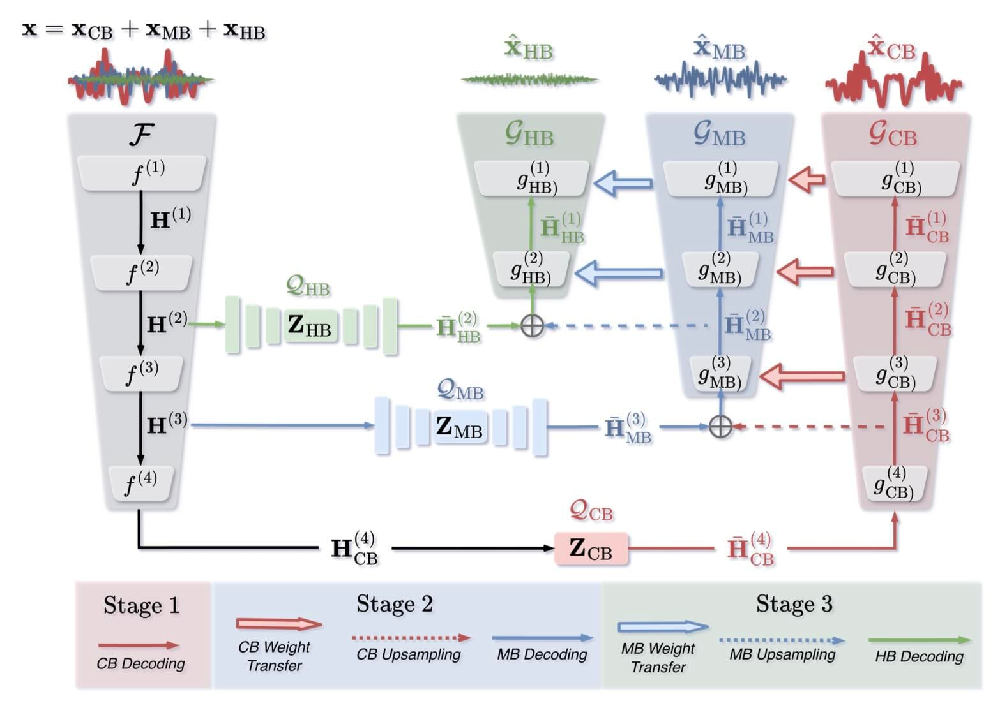

HE-NAC
High-Efficiency Neural Audio Coding via Hierarchical and Residual Multi-Band Quantization
IEEE Transactions on Audio, Speech and Language Processing, 2026
Project Description:
High-fidelity music compression requires preserving detailed high-frequency content, which can be lost through aggressive temporal downsampling and quantization. We introduce HE-NAC, a neural audio codec that builds on HARP-Net and Multi-band HARP-Net to distribute the bitrate across core, mid, and high frequency bands.
HE-NAC combines multi-band residual vector quantization with a staged training strategy. We first train the core-band path to reconstruct the full signal through blind upsampling, then train the mid- and high-band paths to encode the residual information missing from the preceding stages. This lets the codec predict upper-band content from the lower bands while spending additional bits on details that need explicit reconstruction.

In listening tests on 32 kHz music, HE-NAC at approximately 23 kbps outperforms a DAC baseline at a comparable bitrate and HE-AAC at 24 kbps. Objective metrics also support improved reconstruction quality, particularly in the upper frequency bands. Visit the project page for audio comparisons and the code repository for training, inference, and evaluation.
Citation
D. Pétermann, W. Lim, S. Beack, and M. Kim, “HE-NAC: High-Efficiency Neural Audio Coding via Hierarchical and Residual Multi-Band Quantization,” IEEE Transactions on Audio, Speech and Language Processing, vol. 34, pp. 4672-4686, 2026, doi: 10.1109/TASLPRO.2026.3739174.